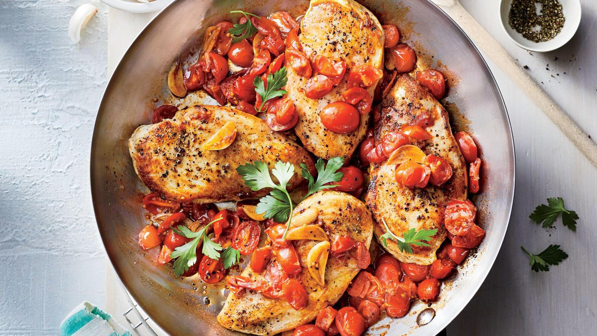

Chicken
Dada ayam adalah potongan bagian ayam yang paling rendah lemaknya tapi tinggi proteinnya. Dalam 100 gram dada ayam tanpa kulit yang sudah matang mengandung 31 gram protein.
Daging dada inilah yang paling populer bagi para penggiat olahraga yang ingin membentuk tubuh lebih berotot dan bagi yang ingin menurunkan berat badan. Pasalnya, daging ini tinggi protein, tetapi kalorinya tidak terlalu besar dibandingkan bagian ayam lainnya.